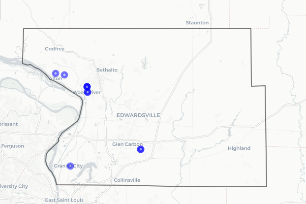
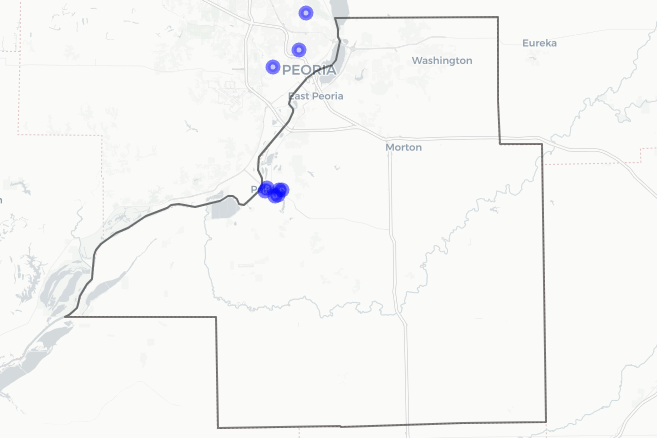
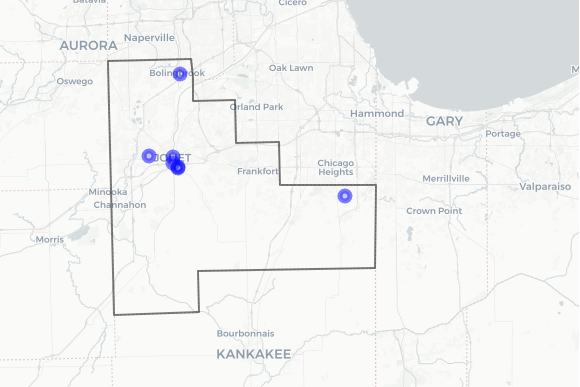
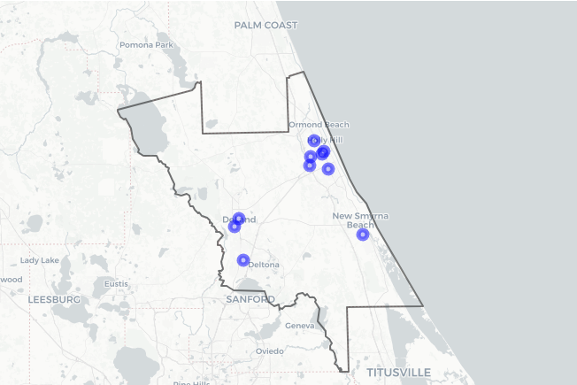

A dashboard focused on Madison County’s changing demographics, resource distribution, and the social conditions driving housing, education, and health inequities.
View DashboardStudent Work Showcase
Instructor: Dr. Brian Chen
Explore student-created County Health Assessment dashboards from MPH 541: Social Determinants of Health. Built in R Shiny, these projects highlight students’ ability to translate county-level public health data into interactive tools for analysis and comparison.

A dashboard focused on Madison County’s changing demographics, resource distribution, and the social conditions driving housing, education, and health inequities.
View Dashboard
An interactive look at Tazewell County’s public health profile, highlighting rural access gaps, child poverty, and countywide patterns across the five SDOH domains.
View Dashboard
A data-driven portrait of Will County that connects housing stress, long commutes, language barriers, and preventive care access to broader health outcomes.
View Dashboard
A county health dashboard examining Volusia County through coastal and inland community needs, local services, and trends in poverty, coverage, and prevention.
View Dashboard